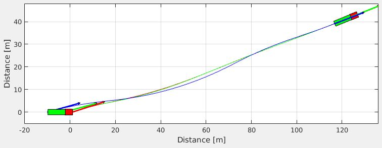

Vehicle Dynamics - Lateral: Open Source Simulation Package for MATLAB
This package is an open source initiative that provides vehicle models and graphics features for yaw dynamics simulation of simple and articulated vehicles.

Contents
Installation
The first thing you have to do is install the package according to the following steps:
Dependencies
To run the functions of the package and the examples from the repository a minimal MATLAB® version and/or Toolbox is required.
Dependencies of the package (Only the files in "+VehicleDynamicsLateral"):
MATLAB, v8.5
Dependencies of the examples (Only the files in "Examples"):
Control System Toolbox, v9.9 MATLAB, v8.5 Robust Control Toolbox, v5.3 Symbolic Math Toolbox, v6.2 Simulink, v8.5 SystemTest, v2.6.9
Description
The general structure of the package is illustrated below. All the classes of the package are categorized into Vehicle model, Tire model and Graphics. One Vehicle model and one Tire model are combined to form the System. The integration of the System, with the apropriate parameters and initial conditions, is performed through the standard ode45 function of MATLAB®. The resulting data can be ploted as Frame and Animation with the Graphics features.
This package uses an object-oriented programming architecture. For more details see Object-Oriented Programming in MATLAB
The links to the description page of the available models and graphics listed below.
Tire model
Vehicle model
The theoretical foundation of vehicle models can be found in: TheoryVehicleSimple, TheoryVehicleSimple4DOF and TheoryVehicleArticulated.
Graphics
Getting started
To make the first steps easier, two template scripts are available covering the simulation of simple and articulated vehicles. We encourage the users to run and explore the examples TemplateSimple.m and TemplateArticulated.m.
Alternatively, for users familiar with Simulink, two template applications are available for running the models of the package in Simulink. Run and explore the examples TemplateSimpleSimulink.m and TemplateArticulatedSimulink.m.
Examples
This section presents a series of studies with the successful use of the package.
| Name | Description |
|---|---|
| Kalman Filter | Kalman Filter application. |
| Sinusoidal Steering | Maneuver with sinusoidal steering angle input. |
| Skid Pad | Simple vehicle moving in circle. |
| Skid Pad 4DOF | Simple vehicle with roll dynamics moving in circle. |
| Steering Control | Double lane change maneuver. |
| Template Articulated | Articulated vehicle simulation. |
| Template Articulated Simulink | Simulate the articulated vehicle model in Simulink. |
| Template Simple | Simple vehicle simulation. |
| Template Simple Simulink | Simulate the simple vehicle model in Simulink. |
| Tire Comparison | Comparison of tire models. |
API Documentation
API Documentation is here. Help and documentation on-the-fly are available through the "doc" and "help" commands, as usual.
Contributing
There are several ways to contribute to open source projects (Contributing to open source).
To push your contribution see the following steps:
- Add and/or improve Matlab files (package or examples) with codes and publishable comments.
- Add the publish command of the new files to DocFiles/makeDoc.m.
- Create the apropriate links between the documentation pages. Ex: "See Also", "Examples", ...
- Update index.m and api.m.
- Run makeDoc.m.
- Copy the files from directory "Documentation" to the gh-pages branch of the repository. One easy way is using ghp-import.
- Commit and push.
Publications
MENDES, A. S.; MENEGHETTI, D. R. ; ACKERMANN, M. ; FLEURY, A. T. . Vehicle Dynamics - Lateral: Open Source Simulation Package for MATLAB. In: Congresso SAE Brasil, 2016, São Paulo. SAE Technical Paper Series, 2016.